승강기기사 (2013-03-10 기출문제)
1과목: 승강기 개론
1. 기계실이 있는 승강기에서 기계실에 설치되지 않는 것은?
- 권상기(Traction Machine)
- 조속기(Governor)
- 비상전원장치(Safety Device)
- 제어반(Control Panel)
(정답률: 72%)

2. 엘리베이터 주로프에 가장 일반적으로 사용되는 와이어로프는?
- 8×W(19), E종, 보통 Z꼬임
- 8×W(19), E종, 보통 S꼬임
- 8×S(19), E종, 보통 S꼬임
- 8×S(19), E종, 보통 Z꼬임
(정답률: 75%)
3. 파이널 리미트스위치의 요건에 대한 설명 중 적당치 못한 것은?
- 기계적으로 조작되어야 하며 작동 캠은 금속제로 만들어야 한다.
- 스위치의 접촉은 직접 기계적으로 열려야 하며 접촉을 얻기 위하여 스프링이나 중력 또는 그 복합에 의존하는 장치를 사용할 수 있다.
- 카 상단 또는 승강로 내부에 장착한 파이널 리미트 스위치는 밀폐된 형식으로 되어야 한다.
- 파이널 리미트스위치는 승강로 내부에 설치하고 카에 부착된 캠으로 조작시켜야 한다.
(정답률: 61%)
4. 초기 직류엘리베이터의 속도제어에 널리 사용된 방식으로 교류전동기(유도전동기)로 직류발전기를 회전시켜 MG(Motor Generator)의 출력을 직접 직류전동기 전기자에 공급하고 발전기의 계자전류를 조절하여 발전기의 발생전압을 임의로 변화시켜 속도를 제어하는 방식은?
- 워드레오나드방식
- 정지레오나드방식
- VVVF제어방식
- 극수변환방식
(정답률: 77%)
5. 교류 이단 속도제어에서 기동과 주행은 고속권선으로 감속과 착상는 저속권선으로 카의 속도를 제어한다. 이때 가장 많이 사용되고 있는 속도비는?
- 2:1
- 3:1
- 4:1
- 5:1
(정답률: 82%)
6. 권상기의 미끄러짐을 결정하는 요소에 대한 설명으로 옳은 것은?
- 로프 감기는 각도가 클수록 미끄러지기 쉽다.
- 카의 가속도와 감속도가 작을수록 미끄러지기 쉽다
- 견인비(트랙션비)가 클수록 미끄러지기 쉽다.
- 로프와 도르래의 마찰계수가 클수록 미끄러지기 쉽다.
(정답률: 76%)
7. 로프식 엘리베이터의 주행여유(runby)에 대한 설명으로 옳은 것은?(관련 규정 개정전 문제로 여기서는 기존 정답인 3번을 누르면 정답 처리 됩니다. 자세한 내용은 해설을 참고하세요.)
- 카가 최하층에 정지했을 때 균형추와 완충기와의 거리이다.
- 승강로 최상층의 승강장 바닥부터 기계실 지지보 또는 바닥 아래 면까지의 수직거리이다.
- 유입식 완충기는 최소거리에 대한 규정이 없다.
- 유입식 완충기의 최대거리는 속도에 따라 다르다.
(정답률: 61%)
8. 정격속도가 240[m/min]을 초과하는 엘리베이터의 승강로에서 꼭대기 틈새는?(관련 규정 개정전 문제로 여기서는 기존 정답인 2번을 누르면 정답 처리 됩니다. 자세한 내용은 해설을 참고하세요.)
- 3.6[m] 이상
- 4.0[m] 이상
- 4.4[m] 이상
- 4.8[m] 이상
(정답률: 68%)
9. 카의 정격속도가 60[m/min]인 경우 조속기의 과속스위치와 캣치의 작동속도는 각각 몇 [m/min] 이하인가?(관련 규정 개정전 문제로 여기서는 기존 정답인 2번을 누르면 정답 처리 됩니다. 자세한 내용은 해설을 참고하세요.)
- 과속스위치 72, 캣치 84
- 과속스위치 78, 캣치 84
- 과속스위치 81, 캣치 90
- 과속스위치 84, 캣치 90
(정답률: 64%)
10. 카의 정격속도가 60[m/min]인 스프링 완충기의 최소행정[mm]은?
- 150
- 125
- 100
- 64
(정답률: 61%)
11. 유압 엘리베이터의 실린더와 유압고무호스의 안전율은 각각 얼마인가?
- 4, 6
- 4,10
- 6, 8
- 6, 10
(정답률: 59%)
12. 기어드(Geared)형 권상기에서 엘리베이터의 속도를 결정하는 요소가 아닌 것은?
- 시브의 직경
- 기어의 감속비
- 권상모터의 회전수
- 로프의 직경
(정답률: 81%)
13. 엘리베이터의 정격속도가 매 분당 180[m]이고, 제동소요 시간이 0.3초인 경우의 제동거리는 몇 [m]인가?
- 0.25
- 0.45
- 0.65
- 0.85
(정답률: 63%)
14. 록 다운 비상정지장치를 반드시 설치해야 하는 엘리베이터의 최저속도[m/min]는?(관련 규정 개정전 문제로 여기서는 2번을 누르면 정답 처리 됩니다. 자세한 내용은 해설을 참고하세요.)
- 210
- 240
- 300
- 360
(정답률: 61%)
15. 유입 완충기에 대한 설명 중 틀린 것은?
- 카 또는 균형추의 평균 감속도는 1G 이하로 한다.
- 순간 최대 감속도는 2.5G를 넘는 감속도가 1/25초 이상 지속하지 않아야 한다.
- 정격속도의 115% 속도로 완충기에 부딪힐 때 규정된 평균 감속도 이하의 감속도율을 얻을 수 있는 행정이 유지 되어야 한다.
- 정격속도 60[m/min] 이하에 사용한다.
(정답률: 57%)
16. 유압 엘리베이터에 사용되는 안전장치가 아닌 것은?
- 하이드로릭 잭(Hydraulic Jack)
- 조속기(Governor)
- 릴리프 밸브(Relief Valve)
- 체크 밸브(Check Valve)
(정답률: 68%)
17. 문짝수는 2이고 중앙열기 문을 나타낸 도어 시스템 분류기호는?
- 1S
- 2S
- 1CO
- 2CO
(정답률: 80%)
18. 사람이 탑승하지 아니하면서 적재용량 1톤 미만의 소형화물(서적, 음식물 등) 운반에 적합하게 제작된 엘리베이터는?
- 수평보행기
- 화물용 엘리베이터
- 침대용 엘리베이터
- 덤웨이터
(정답률: 82%)
19. 스텝폭 1200형 에스컬레이터에서 스텝면의 수평 투영 면적[m2]당 구조물이 받는 하중[kg]은 얼마인가?
- 270
- 2700
- 1200
- 12000
(정답률: 52%)
20. 엘리베이터의 설치형태 및 카 구조에 의한 분류에 적합하지 않는 것은?
- 더블 테크 엘리베이터
- 전망용 엘리베이터
- 셔틀 엘리베이터
- 장애자용 엘리베이터
(정답률: 77%)
2과목: 승강기 설계
21. 스프링 완충기를 설계할 때 적용 중량의 기준은 스프링간에 접촉된 부분 없이 정하중 상태에서 카측 완충기는 카자중과 정격하중을 합한 무게의 몇 배를 견디어야 하는가?
- 1
- 2
- 3
- 4
(정답률: 58%)
22. 기계실 출입문의 크기 기준으로 적합한 것은?
- 폭 0.9[m]이상, 높이 2.0[m]이상
- 폭 0.8[m]이상, 높이 1.9[m]이상
- 폭 0.7[m]이상, 높이 1.8[m]이상
- 폭 0.6[m]이상, 높이 1.7[m]이상
(정답률: 79%)
23. 간접식 유압엘리베이터의 정격속도는 45[m/min]인 꼭대기 틈새를 검사할 때 카를 최상층에 미속으로 상승시켜 플런저가 이탈방지장치로 정지했을 대 최소 확보되어야 할 수치는?
- 56.5[cm]
- 62.9[cm]
- 75.6[cm]
- 82.1[cm]
(정답률: 58%)
24. 엘리베이터 각 부분의 절연저항을 표시한 것 중 틀린것은?(오류 신고가 접수된 문제입니다. 반드시 정답과 해설을 확인하시기 바랍니다.)
- 300V 이하 전동기 주회로 : 0.2[MΩ]이상
- 150V 이하 신호회로 : 0.1[MΩ]이상
- 220V용 조명회로 : 0.4[MΩ]이상
- 400V 초과 전동기 주회로 : 0.4[MΩ]이상
(정답률: 58%)
25. 승객용 엘리베이터의 경우 카의 바닥 끝부분과 승강로 벽과의 수평거리는 얼마 이하이어야 하는가?(관련 규정 개정전 문제로 여기서는 기존 정답인 3번을 누르면 정답 처리됩니다. 자세한 내용은 해설을 참고하세요.)
- 75[mm]
- 100[mm]
- 125[mm]
- 150[mm]
(정답률: 68%)
26. 승강로 상ㆍ하의 단말 장치장치(Terminal Stopping) Device)에 대한 설명 중 틀린 것은?
- 권상기를 위한 정차장치는 카, 승가로 또는 기계실에 위치하여 카의 이동에 의항여 조작되어야 한다.
- 기계실에 설치되는 것은 기계적으로 연결되어 카의 이동에 의항여 동작하거나 마찰 또는 견인에 의항여 구동되는 방식을 이용한다.
- 정차장치가 카에 기계적으로 연결되고, 구동수단으로 사용되는 테이프, 체인, 로프 및 이와 유사한 장치의 구동수단에 이상이 발생할 경우 구동모터를 차단하고 제동기를 작동시킬 수 있는 장비를 구비하여야 한다.
- 이 장치는 최종단말장치장치가 작동할 때까지 그 기능이 유지되도록 설계 및 설치되어야 한다.
(정답률: 53%)
27. 엘리베이터 1대가 5분가 수송능력은 280명, 승객수 28명 일 경우 엘리베이터의 일주시간(RTT)은?
- 20초
- 30초
- 40초
- 50초
(정답률: 65%)
28. 사무용 건물에 설치하는 로프식 엘리베이터의 조속기 설계기준으로 옳지 않은 것은?(관련 규정 개정전 문제로 여기서는 기존 정답인 1번을 누르면 정답 처리 됩니다. 자세한 내용은 해설을 참고하세요.)
- 정격속도 45[m/min]이하인 경우, 과속스위치는 60[m/min]이하에서 끊길 것
- 정격속도 45[m/min]를 초과하는 경우, 과속스위치는 정격속도의 1.3배 이하에서 끊길 것
- 정격속도 45[m/min]이하인 경우, 캣치는 과속스위치가 떨어짐과 동시 또는 떨어진 후 작동하도록 할 것
- 정격속도 45[m/min]를 초과하는 경우, 캣치는 과속스위치가 떨어진 후에 작동하도록 할 것
(정답률: 57%)
29. 재료의 단순 인장에서 포아송 비는 어떻게 나타내는가?
- 세로 변형률/가로변형률
- 부피변형률/가로변형률
- 가로 변형률/세로변형률
- 부피변형률/세로변형률
(정답률: 69%)
30. 방범설비인 연락 장치에 대한 설명으로 틀린 것은?
- 연락 자치는 정상전원으로만 작동하여도 된다.
- 비상시 카내부에서 외부의 관계자에게 연락이 가능해야 한다.
- 비상요청시 카외부에서 카내의 적절한 지시를 할 수 있어야 한다.
- 키내부, 기계실, 관리실, 동시통화가 가능해야 한다.
(정답률: 76%)
31. 지진대책에 따른 엘리베이터의 구조에 관한 설명으로 틀린 것은?
- 지진이나 기타 진동에 의해 주 로프가 도르래에서 이탈하지 않아야 한다.
- 엘리베이터의 균형추가 지진이나 기타 진동에 의하여 가이드 레일로부터 이탈하지 않아야 한다.
- 승강로내에는 지진시에 로프, 전선 등의 기능에 악영향이 발생하지 않도록 모든 돌출물을 설치하여서는 안 된다.
- 엘리베이터의 전동기, 제어반 및 권상기는 카마다 설치하고 또한 지진이나 기타 진동에 의해 전도 또는 이동하지 않아야 한다.
(정답률: 72%)
32. 다음 중 에스컬레이터의 일반구조로 적합하지 않은 것은?
- 사람 또는 물건이 에스컬레이터의 각 부분에 끼이거나 부딪히는 일이 없도록 할 것
- 경사도는 일반적으로 30°이하로 할 것
- 디딤판과 손잡이는 동일 속도로 할 것
- 디딤판의 정격속도는 50[m/min] 이하로 할 것
(정답률: 63%)
33. 제어반에 특별 제3종 접지공사를 하였다면 접지저항은 몇 [Ω]이하이어야 하는가?
- 5
- 10
- 15
- 20
(정답률: 68%)
34. 카바닥과 카틀ㄹ의 부재에 작용하는 하중의 종류가 틀리게 연결된 것은?
- 카주-굽힘력, 장력
- 하부체대-굽힘력
- 추돌판-굽힘력
- 상부체대 - 장력
(정답률: 61%)
35. 유입 완충기의 설계조건으로 틀린 것은?
- 최대 적용중량은 적재하중의 100%로 한다.
- 행정 계산시 정격속도의 115%로 충돌했을 경우의 속도로 한다.
- 카가 충돌하였을 경우 1G이상의 감속도가 유지되어야 한다.
- 플런저를 완전히 압축했을 경우 90초 이내에 완전히 복귀해야 한다.
(정답률: 52%)
36. 기계실에 별도의 환기장치가 없을 때 환기를 위한 개구부의 크기는 기계실 바닥면적의 얼마 이상으로 해야 하는가?
- 1/20
- 1/30
- 1/40
- 1/50
(정답률: 53%)
37. 그림은 SCR을 이용한 전파정류 회로이다 입력(실효값)이 12V, SCR의 점호각(a')이 60°일 때, 출력 Vd[V]은?
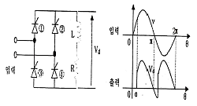
- 약 2.7
- 약 5.4
- 약 8.5
- 약 10.8
(정답률: 47%)
38. 고층용, 저층용이 마주보는 2뱅크로 배치되어 있는 엘리베이터인 경우의 대면거리[m]는?
- 3[m]이상
- 4[m]이상
- 5[m]이상
- 6[m]이상
(정답률: 65%)
39. 도어에 관련된 부품 및 장치에 대한 설명으로 옳지 않은 것은?
- 도어 클로저는 도어머신의 구동장치이다.
- 도어 인터록은 승강장 도어의 열림을 방지한다.
- 도어 행거는 승강장 도어가 가드레일에서 이탈하는 것을 방지한다.
- 도어슈는 승강문지방(Sill) 홈에 6mm 이상 맞물려야 한다.
(정답률: 59%)
40. 비상용 엘리베이터에서 1차 소방스위치(키 스위치)를 조작한 후의 작동사항으로 옳은 것은?
- 문닫힘 안전장치 및 과부하감지장치가 작동하지 않아야 한다.
- 승강자의 호출에는 카가 응답하여야 한다.
- 문닫힘 버튼을 누르다가 손을 떼면 문은 닫히고 있는 상태로 유지되어야 한다.
- 카 내에서의 행선 층 등록은 일부 층만 등록이 있도록 한정되어야 한다.
(정답률: 60%)
3과목: 일반기계공학
41. 주조품을 제조하기 위한 모형(pattern) 중 코어 모형을 사용해야 하는 주물로 적합한 것은?
- 속이 빈 주물
- 크기가 작은 주물
- 크기가 큰 주물
- 외형이 복잡한 주물
(정답률: 73%)
42. 하중의 종류를 구분하는데 잇어서 부하속도에 따라 분류된 하중의 종류가 아닌 것은?
- 변동하중
- 충격하중
- 전단하중
- 반복하중
(정답률: 60%)
43. 비틀림 모멘트 T를 받는 중실푹의 우너형 단면에서 발생하는 전단응력이т일 때 이 중실축의 지름 d를 구하는 식으로 옳은 것은?
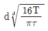
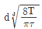
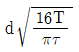
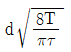
(정답률: 58%)
44. 나사 조립부에 진동과 충격을 받으면 순간적으로 접촉압력이 감소하여 마찰력이 거의 없어지며 이런 현상이 반복되면 나사가 풀리는 원인이 된다. 이러한 나사의 풀림을 방지하는 방법으로 거리가 먼 것은?
- 스프링 와셔를 이용하여 조립한다.
- 로크 너트를 사용한다.
- 멈춤 나사를 사용한다.
- 캡 너트를 사용한다.
(정답률: 55%)
45. 미터 보통 나사에서 나사의 크기를 나타내는 호칭지름(nominal diameter)은?
- 바깥지름
- 골지름
- 유효지름
- 리드
(정답률: 62%)
46. 슬라이드 밸브 등에서 밸브가 중립점에 있을 때 포트는 닫혀 있고, 밸브가 조금이라도 변위하는 포트가 열리고 유체가 흐르도록 중복된 상태를 의미하는 유압 용어는?
- 랩
- 제로 랩
- 오버 랩
- 언더 랩
(정답률: 57%)
47. 축(shaft)의 종류 중 전동축의 특수한 형태로 축의 지름에 비하여 길이가 짧은 축을 의미하는 것으로 형상과 치수가 정밀하고 변형량이 극히 작아야 하는 것은?
- 스핀들
- 차축
- 크랭크축
- 중공축
(정답률: 65%)
48. 보의 재료가 선형탄성적이고 후크의 법칙을 따른다고 할 때 보의 처짐에 관한 설명으로 옳은 것은?
- 곡률반경과 굽힘모멘트는 비례한다.
- 곡률은 탄성계수에 비례한다.
- 곡률이 클수록 굽힘모멘트는 커진다
- 굽힘강성(EI)이 클수록 곡률반경이 작아진다.
(정답률: 38%)
49. 선반가공에서 지름 10mm인 연강을 20m/min로 가공할 때 분당 회전수는 약 몇 rpm인가?
- 318
- 636
- 999
- 1998
(정답률: 60%)
50. 담금질(quenching)한 강을 A1 변태점 이하 온도로 가열하여 인성을 증가시키는 열처리는?
- 풀림(annealing)
- 불림(normalizing)
- 뜨임(tempering)
- 서브 제로(surzero)처리
(정답률: 53%)
51. 용접법 중 하나인 납땜에 관한 설명으로 틀린 것은?
- 동일한 종류의 금속 또는 이종의 금속을 접합하려고 할때 접합할 모재는 용융시키지 않고 모재보다 용융점이 낮은 용가재를 사용하여 접합하는 방법이다
- 사용하는 용가재의 종류에 따라 크게 연납과 경납으로 구분된다.
- 융점이 450℃ 이상인 용가재를 사용하여 납땜하는 것을 연납땜이라고 하고, 450℃이하인 용가재를 사용하여 납땜하는 것을 경납땜이라고 한다
- 납땜의 성패는 용접 모재인 고체와 땜납인 액체가 어느 만큼의 친화력을 갖고 서로 접촉될 수 있느냐에 달려 있다.
(정답률: 66%)
52. 파이프 유동에서 Reynolds 수(Re)가 약 몇 이하일 경우 층류 유동으로 볼 수 있는가?
- Re = 600
- Re = 2100
- Re = 5200
- Re = 14000
(정답률: 65%)
53. 코일 스프링에서 스프링상수(k)에 대한 설명으로 틀린것은?
- 스프링상수는 스프링 소재의 전단탄성계수에 비례한다.
- 스프링상수는 스프링 소재의 지름의 4승에 비례한다.
- 스프링상수는 코일의 평균지름의 3승에 반비례한다.
- 스프링상수는 스프링의 유효감김수에 비례한다.
(정답률: 46%)
54. 황동에서 주로 발생하는 화학적 변형에 속하지 않는 것은?
- 탈아연 부식(dezincification corrosin)
- 자연균열(seasoning cracking)
- 청열취성(blue shortness)
- 고온 탈아연(dezinciong).
(정답률: 53%)
55. 유압기기의 제어밸브를 기능면에서 크게 3가지로 구분할 때 이에 속하지 않는 것은?
- 압력제어밸브
- 방향제어밸브
- 유량제어밸브
- 온도제어밸브
(정답률: 63%)
56. 축의 휨, 원통의 진원도 측정에 가장 적합한 측정기는?
- 다이얼 게이지
- 하이트 게이지
- 버니어캘리퍼스
- 각도 게이지
(정답률: 73%)
57. 탄소강에서 상온취성을 일으키는데 가장 큰 영향을 주는 원소는?
- Si(규소)
- S(황)
- Mn(망간)
- P(인)
(정답률: 58%)
58. 판금 공작법 중 지름이 같은 두 원통을 서로 겹쳐 끼우기 위하여 원통의 끝 부분에 주름을 잡아 지름을 약간 감소시키는 작업을 무엇이라고 하는가?
- 크림핑
- 비딩
- 터닝
- 스피닝
(정답률: 54%)
59. 기어 잇수가 각각 19개, 56개 이고, 기어의 모듈은 4, 압력각이 20°인 한 쌍의 표준 스퍼기어 장치의 기어 중심간 거리는 약 몇 mm 인가?
- 79.81
- 75
- 159.62
- 150
(정답률: 39%)
60. 강철봉을 기온이 30℃인 상태에서 240N/cm2의 인장응력을 발생시켜 놓고 양단을 고정하였다. 이 봉을 60℃로 기온을 상승시키면 강철봉에 발생하는 응력은 어떻게 되는가? (단, 세로탄성계수는 E=2×106N/cm2, 선팽창계수는 α=1×10-5/℃이다.)
- 840N/cm2의 인장응력이 발생한다.
- 360N/cm2의 압축응력이 발생한다.
- 600N/cm2의 인장응력이 발생한다.
- 600N/cm2의 압축응력이 발생한다.
(정답률: 50%)
4과목: 전기제어공학
61. 60[Hz], 4극, 슬립 6%인 유도전동기를 어능 공장에서 운전하고자 할 때 예상되는 회전수는 약 몇 [rpm]인가?
- 1300
- 1400
- 1700
- 1800
(정답률: 56%)
62. 처음에 충전되지 않은 커패시터에 그림과 같은 전류 파형이 가해질 때 커패시터 양단의 전압파형은?
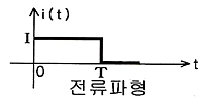
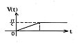
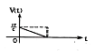
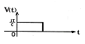
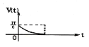
(정답률: 51%)
63. 제어장치의 에너지에 의한 분류에서 타력제어와 비교한 자력제어의 특징 중 맞지 않는 것은?
- 저비용
- 단순구조
- 확실한 동작
- 빠른 조작 속도
(정답률: 61%)
64. 환상의 솔레노이드 철심에 200회의 코일을 감고 2[A]의 전류를 흘릴 때 발생하는 기자력은 몇[AT]인가?
- 50
- 100
- 200
- 400
(정답률: 65%)
65. 운전자가 배치되어 있지 않는 엘리베이터의 자동제어는?
- 추종제어
- 프로그램제어
- 정치제어
- 프로세스제어
(정답률: 64%)
66. 그림과 같은 블록선도에서 등가 합성 전달함수는?
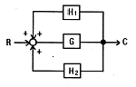
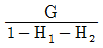
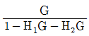
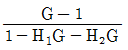
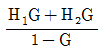
(정답률: 62%)
67. 전달함수
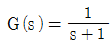
인 제어계의 인디셜 응답은?- 1+e-t
- 1-e-t
- e-t-1
- e-t
(정답률: 46%)
68. 직류 분권발전기를 운전 중 역회전 시키면 일어나는 현상은?
- 단락이 일어난다.
- 정회전 때와 같다.
- 발전되지 않는다.
- 괴대 전압이 유기된다.
(정답률: 59%)
69. 예비전원으로 사용되는 축전지의 내부 저항을 측정하려고 한다. 가장 적합한 브리지는?
- 휘트스톤 브리지
- 캠벨 브리지
- 코올라우시 브리지
- 맥스웰 브리지
(정답률: 61%)
70. R=100[Ω], L=20[mH], C=47[uF]인 R-L-C 직렬회로에 순시전압 V=141.4sin 377t[V]를 인가하면 이 회로의 임피던스는 약 몇 [Ω]인가?
- 97
- 111
- 122
- 130
(정답률: 48%)
71. 서보 전동기의 특징으로 잘못 표현된 것은?
- 기동, 정지, 역전 동작을 자주 반복할 수 있다.
- 발열이 작아 냉각방식이 필요 없다.
- 속응성이 충분히 높다.
- 신뢰도가 높다.
(정답률: 67%)
72. 측정하고자 하는 양을 표준량과 서로 평형을 이루도록 조절하여 표준량의 값에서 측정량을 구하는 측정방식은?
- 편위법
- 보상법
- 취환법
- 영위법
(정답률: 66%)
73. 기준입력신호에서 제어량을 뺀 값으로 제어계의 동작 결정의 기초가 되는 것은?
- 기준 입력
- 제어 편차
- 제어 입력
- 동작 편차
(정답률: 51%)
74. 그림과 같은 논리회로는?
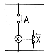
- AND회로
- OR회로
- NOT회로
- NOR회로
(정답률: 58%)
75. 5[kW], 20[rps]인 유도전동기의 토크는 약 몇 [kgㆍm]인가?(오류 신고가 접수된 문제입니다. 반드시 정답과 해설을 확인하시기 바랍니다.)
- 39.81
- 27.09
- 18.81
- 8.12
(정답률: 31%)
76. 미리 정해진 순서 또는 일정의 논리에 의해 정해진 순서에 따라 제어의 각 단계를 순차적으로 진행시켜가는 제어를 무엇이라 하는가?
- 비율차동제어
- 조건제어
- 시퀸스제어
- 루프제어
(정답률: 73%)
77. 여러 가지 전해액을 이용한 전기분해에서 동일량의 전기로 석출되는 물질의 양은 각각의 화학당량에 비례한다고 하는 법칙은?
- 페러데이의 법칙
- 줄의 법칙
- 렌츠의 법칙
- 쿨롱의 법칙
(정답률: 62%)
78. 프로세스 제어용 검출기기는?
- 유량계
- 전압검출기
- 속도검출기
- 전위차계
(정답률: 44%)
79. 공기식 조작기기의 장점을 나타낸 것은?
- 신호를 먼 곳까지 보낼 수 있다.
- 선형의 특성에 가깝다.
- PID 동작을 만들기 쉽다.
- 큰 출력을 얻을 수 있다.
(정답률: 58%)
80. 3상 유도전동기에서 일정 토크 제어를 위하여 인버터를 사용하여 속도제어를 하고자 할 때 고급전압과 주파수의 관계는 어떻게 해야 하는가?
- 공급전압과 주파수는 비례되어야 한다.
- 공급전압과 주파수는 반비례되어야 한다.
- 공급전압이 항상 일정하여야 한다.
- 공급전압의 제공에 비례하여야 한다.
(정답률: 52%)